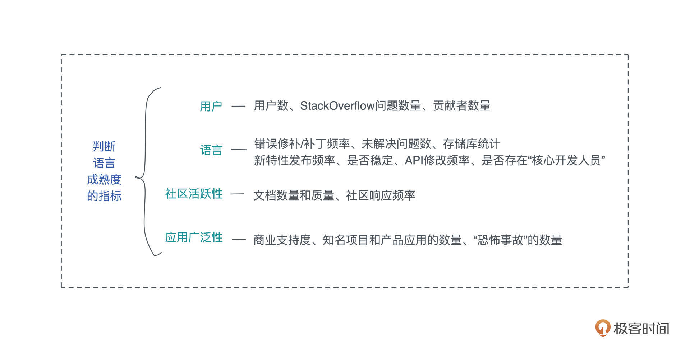

- 00 开篇词 让Rust成为你的下一门主力语言.md
- 01 内存：值放堆上还是放栈上，这是一个问题.md
- 02 串讲：编程开发中，那些你需要掌握的基本概念.md
- 03 初窥门径：从你的第一个Rust程序开始！.md
- 04 get hands dirty：来写个实用的CLI小工具.md
- 05 get hands dirty：做一个图片服务器有多难？.md
- 06 get hands dirty：SQL查询工具怎么一鱼多吃？.md
- 07 所有权：值的生杀大权到底在谁手上？.md
- 08 所有权：值的借用是如何工作的？.md
- 09 所有权：一个值可以有多个所有者么？.md
- 10 生命周期：你创建的值究竟能活多久？.md
- 11 内存管理：从创建到消亡，值都经历了什么？.md
- 12 类型系统：Rust的类型系统有什么特点？.md
- 13 类型系统：如何使用trait来定义接口？.md
- 14 类型系统：有哪些必须掌握的trait？.md
- 15 数据结构：这些浓眉大眼的结构竟然都是智能指针？.md
- 16 数据结构：Vec_T_、&[T]、Box_[T]_ ，你真的了解集合容器么？.md
- 17 数据结构：软件系统核心部件哈希表，内存如何布局？.md
- 18 错误处理：为什么Rust的错误处理与众不同？.md
- 19 闭包：FnOnce、FnMut和Fn，为什么有这么多类型？.md
- 20 4 Steps ：如何更好地阅读Rust源码？.md
- 21 阶段实操（1）：构建一个简单的KV server-基本流程.md
- 22 阶段实操（2）：构建一个简单的KV server-基本流程.md
- 23 类型系统：如何在实战中使用泛型编程？.md
- 24 类型系统：如何在实战中使用trait object？.md
- 25 类型系统：如何围绕trait来设计和架构系统？.md
- 26 阶段实操（3）：构建一个简单的KV server-高级trait技巧.md
- 27 生态系统：有哪些常有的Rust库可以为我所用？.md
- 28 网络开发（上）：如何使用Rust处理网络请求？.md
- 29 网络开发（下）：如何使用Rust处理网络请求？.md
- 30 Unsafe Rust：如何用C++的方式打开Rust？.md
- 31 FFI：Rust如何和你的语言架起沟通桥梁？.md
- 32 实操项目：使用PyO3开发Python3模块.md
- 33 并发处理（上）：从atomics到Channel，Rust都提供了什么工具？.md
- 34 并发处理（下）：从atomics到Channel，Rust都提供了什么工具？.md
- 35 实操项目：如何实现一个基本的MPSC channel？.md
- 36 阶段实操（4）：构建一个简单的KV server-网络处理.md
- 37 阶段实操（5）：构建一个简单的KV server-网络安全.md
- 38 异步处理：Future是什么？它和async_await是什么关系？.md
- 39 异步处理：async_await内部是怎么实现的？.md
- 40 异步处理：如何处理异步IO？.md
- 41 阶段实操（6）：构建一个简单的KV server-异步处理.md
- 42 阶段实操（7）：构建一个简单的KV server-如何做大的重构？.md
- 43 生产环境：真实世界下的一个Rust项目包含哪些要素？.md
- 44 数据处理：应用程序和数据如何打交道？.md
- 45 阶段实操（8）：构建一个简单的KV server-配置_测试_监控_CI_CD.md
- 46 软件架构：如何用Rust架构复杂系统？.md
- 加餐 Rust2021版次问世了！.md
- 加餐 代码即数据：为什么我们需要宏编程能力？.md
- 加餐 宏编程（上）：用最“笨”的方式撰写宏.md
- 加餐 宏编程（下）：用 syn_quote 优雅地构建宏.md
- 加餐 愚昧之巅：你的Rust学习常见问题汇总.md
- 加餐 期中测试：参考实现讲解.md
- 加餐 期中测试：来写一个简单的grep命令行.md
- 加餐 这个专栏你可以怎么学，以及Rust是否值得学？.md
- 大咖助场 开悟之坡（上）：Rust的现状、机遇与挑战.md
- 大咖助场 开悟之坡（下）：Rust的现状、机遇与挑战.md
- 特别策划 学习锦囊（一）：听听课代表们怎么说.md
- 特别策划 学习锦囊（三）：听听课代表们怎么说.md
- 特别策划 学习锦囊（二）：听听课代表们怎么说.md
- 用户故事 绝望之谷：改变从学习开始.md
- 用户故事 语言不仅是工具，还是思维方式.md
- 结束语 永续之原：Rust学习，如何持续精进？.md
大咖助场 开悟之坡（上）：Rust的现状、机遇与挑战
你好，我是张汉东。
本月应陈天兄邀请，为他的极客时间课程写一篇加餐文章。2021 年也马上要过去了，我也正好借此机会对 Rust 语言的现状、机遇和挑战来做一次盘点，希望给正在学习 Rust 的朋友提供一个全局视角。这篇文章包含一些客观的数据，也有一些个人观点，仅供参考。
Rust 现状
要比较全面地评价一个语言的现状，我个人认为要从三个方面分析：
-
语言自身的成熟度。从语言自身出发，去看语言的功能特性是否完善、便于开发和学习。
-
语言的生态和应用场景。从语言的生态系统出发，了解该门语言在哪些领域已经开始布局。
-
可持续发展能力。从三方面考虑：了解一门语言是开放的，还是封闭的、这门语言背后的开发者是否可以稳定投入到这门语言、这门语言被常应用的领域是否属于可持续发展的领域。
所以，我们按这个分析方法对 Rust 语言进行分析，你也可以按这个方法来审视其他语言。
语言自身成熟度
Rust 语言 2015年发布 1.0 稳定版开始，已经连续发布了两大版次 2018 Edition 和 2021 Edition。
2015 Edition：Rust 0.1.0 ~ Rust 1.0稳定版，主题是 “稳定性”2018 Edition：Rust 1.0 ~ 1.31.0稳定版，主题是 “生产力”2021 Edition:Rust 1.31.0 ~ 1.56.0稳定版，主题是“成熟”
可以说，Rust 语言已经足够成熟到能将其应用于生产环境。但是判断一门编程语言的成熟度，其实还有很多讲究。
不同语言的成熟度标准可能不太一样，因为成熟度并不是一个绝对的值，它永远是相对而言的。 比如 Java 和 Node.js 哪个成熟度更高呢？Java 生态中 Spring 框架已经发展了十几个年头了，足够成熟。但是 Node.js 生态中，也有类似于 AngularJS、Ember.js 这些框架，也被认为是非常成熟的。 要说谁更成熟，这是没有答案的。
但是也有一些判断成熟度的思路和对应指标，我们可以通过这些指标来相对评判一下 Rust 的成熟度。大致可以分成这样4类：用户、语言、社区活跃性、应用广泛性。

- 用户：用户数、StackOverflow问题数量、贡献者数量
用户数：Rust 连续六年是用户最受欢迎的语言，但实际用户数，可以从 TIOBE 编程语言排行榜中看出来，截止 2021年11月，Rust 排名 29 ，流行度是 0.54% 。任何没有进入 TIOBE 榜单前20的语言，其实都还需要进行营销和宣传，这意味着 Rust 依旧属于小众语言。
贡献者数量：Rust 贡献者数量截止目前为 3539 个。我们对比一下Github开源的其他语言：流行的 Go 语言目前贡献者是 1758个；Kotlin 目前的贡献者是 516 个。看一下流行的框架 Rails 的贡献者是 4379个。 相对而言，Rust 语言贡献者是相当多的。
StackOverflow 问题数量：Rust 相关问题一共有 24924 个，平均每周 150 个问题左右，每天 20 个问题左右。 相比其他语言，javascript 问题 2299100 个，Java 问题 1811376 个， Go 问题 57536 个，C 问题 368957 个，Cpp 问题 745313 个。 相比于 Go ， Rust 的问题数几乎是它的一半。
- 语言：错误修补/补丁频率、未解决问题数、存储库统计、新特性发布频率、是否稳定、API修改频率、是否存在“核心开发人员”
错误修复/补丁频率。根据 Github issues 相关数据， Rust 目前肉眼可见每小时平均修复一个 issue 问题。从 2010年 6月17号 Rust 创始人 Graydon 的第一个提交开始，一共修复了 33942 个issues 和 49011 个 PR，十年间按 3832天计算，平均一天修复 8 个 issue，13 个 PR。
未解决问题数。目前有 7515 个开放的问题，如果按上面的平均问题修复频率来计算，预计 3 年左右可以修复完毕。3年以后，又是新的 Edition 发布： 2024 Edtion。
存储库统计，目前 star 数有 60500 个，watch 数有 15000 个。新特性发布频率，Rust 稳定版每六周发一个新版。Rust 早已稳定，且稳定版 API 基本不会更改。Rust 核心开发人员非常多，按工作小组来组织分配，参考 Rust 团队治理
- 社区活跃性：文档数量和质量、社区响应频率
文档数量和质量主要看 API 文档、书籍、教程和博客。Rust API 文档相当成熟和先进，目前国内外 Rust 书籍也越来越丰富，Rust Weekly 每周都会发布社区很多 Rust 相关博客、 视频等文章。
社区响应频率考察有经验的用户如何帮助新用户。Rust 社区国内外都有，通过群组织、论坛、线下活动等帮助社区成员进行交流。
- 应用广泛性：商业支持度、知名项目和产品应用的数量、“恐怖事故”的数量
商业支持度方面，Rust 基金会已经成立：Google、华为、微软、亚马逊、Facebook、Mozilla 、丰田、动视等公司都是其董事成员。
知名项目和产品应用的数量，比如开源 CNCF 的一些知名项目： 数据库（TiKV）、云原生（Linkerd、Krustlet）、事件流系统（Tremor）、区块链（Near、Solana、 Parity等），还有Google Andriod，亚马逊、 微软等也都支持 Rust 开发。
国内使用 Rust 的公司：蚂蚁金服、PingCAP、字节跳动、秘猿、溪塔、海致星图、非凸科技等。还有很多优秀的项目或产品这里没有列出来。
最后是“恐怖事故”的数量，如果没有这一项，证明它并未在实际具有挑战性的生产环境中使用。Rust 有专门的信息安全工作组，并且有专门的网站记录 Rust 生态中相关“恐怖事故” : https://rustsec.org/。
通过上面这些标准来判断， Rust 语言都做的相当到位，所以可以说，Rust 语言基本已经迈入“成熟语言”行列。
语言生态与应用场景
当然，一个语言自身的成熟度是一方面，围绕语言的生态也相当重要。
我在今年六月份写的 《Rust 2021 行业调研报告》 中提到了 Rust 语言的生态状况，经过半年的发展，crates 的下载总量达到 11,012,362,794 次，即 110 亿次。
Rust的应用场景基本可以同时覆盖 C/Cpp/Java/Go/Python 的应用领域。大致可以分成十大领域：
- 数据处理与服务。 代表产品和项目包括：
TiKV/Timely Dataflow/Vector/tantivy/tremor-rs/databend等 - 云原生。代表产品和项目包括：
StratoVirt/Firecracker/Krustlet/linkerd2-proxy/Lucet/WasmCloud/Habitat等 - 操作系统：
Rust for Linux/Coreutils/Occulum/Redox/Tock/Theseus等 - 工具类：
rustdesk/ripgrep/NuShell/Alacritty等 - 机器学习：
Linfa/tokenizers/tch-rs/ndarray/Neuronika/tvm-rs/TensorFlow-rs - 游戏：
Veloren/A/B Street/rust-gpu/Bevy/rg3d - 客户端开发： 飞书
App跨平台组件/flutter_rust_bridge/Iced/Tauri/egui等 - 区块链/元宇宙：
Diem/Substrate/Nervos CKB/Near/Solana/nannou/makepad/makepad等 - 安全：
rustscan/feroxbuster/rusty-tor/sn0int/sniffglue等 - 其他语言生态基础设施：比如 swc/deno/rome 等前端基础设施工具，WebAssembly 技术等。
可持续发展能力
一个语言的可持续发展能力可以从三方面来了解：封闭的还是开放的、语言自身的可持续发展能力、语言公司应用的潜力。
Rust 语言是完全开源的，它也是世界上最大的开源社区组织。由不同职责的团队和工作组共同协作。具体可以在 Rust 官网看到相关信息。目前拥有 3539 个贡献者。Rust 语言目前的工作流程和社区，对于 Rust 良性可持续发展拥有积极推动的作用。
2021 年 2 月 9 号，Rust 基金会宣布成立。华为、AWS、Google、微软、Mozilla、Facebook 等科技行业领军巨头加入 Rust 基金会，成为白金成员，以致力于在全球范围内推广和发展 Rust 语言，为 Rust 语言的开发者们也提供了强有力的资金后盾。
随后，ARM 、AUTOMATA、1PASSword、丰田汽车、动视、Knoldus 、Tangram 等各个领域的公司都加入了基金会，为推动 Rust 做贡献。最近 Rust 基金会又推选在非营利组织有十五年经验的 Rebecca 成为了基金会的执行董事（ED）和CEO。相信在 Rust 基金会的领导下，Rust 会有广泛的应用前景。
综合以上三方面， Rust 语言的可持续发展前景非常广阔。
Rust 机遇
我们分析 Rust 的现状，是为了让自己更全面地了解 Rust 。但 Rust 未来如何发展，对于正在学习 Rust 语言的个人来说，明白 Rust 未来机遇在哪，可能对自身职业规划更有帮助。
时代变革中 Rust 有何机遇
当下，互联网技术与可再生能源革命正在开启新一轮工业革命的大幕，人类已经站在新时代的门槛上。世界范围内新一轮科技革命和产业变革正在兴起。5G、低纳米制程芯片技术、物联网技术和人工智能，为智慧城市、智慧制造、智慧交通、智能家居等应用带来更多可能。
这意味着数以百万亿的设备会接入网络，业界在计算、储存和通信能力方面遇到前所未有的异质性，并且在产生数据以及必须交付和使用数据的规模方面也面临新的挑战。
要构建美好的未来，并没有那么容易。头号的挑战就是安全问题。由于联网节点分布广、数量多，应用环境复杂，计算和存储能力有限，无法应用常规的安全防护手段，导致整体安全性相对减弱。如果在工业、能源、 电力、交通等国家战略性基础行业中应用，一旦发生安全问题，将造成难以估量的损失。
基础设施信任链条连接到哪里，安全就能保护到哪里。而Rust 语言正是今天用于构建可信系统的不二选择，可以说，Rust 是对的时间出现的对的工具（the right tool at the right time）。
Rust 丰富的类型系统和所有权模型，保证了内存安全和线程安全，让我们在编译期就能够消除各种各样的错误，并且在性能上可以媲美 C/Cpp。
理论上，因为 Rust 有比C 更严格的不可变和别名规则，应该比 C 语言有更好的性能优化，不过由于目前在LLVM 中，超越 C语言的优化是一项正在进行的工作，所以Rust仍然没有达到其全部潜力。
Rust 语言由于没有运行时和垃圾回收，它能够胜任对性能要求特别高的服务，可以在嵌入式设备上运行，还能轻松和其他语言集成。但是，最大的潜力是可以无畏（fearless）地并行化大多数 Rust 代码，而等价的 C 代码并行化的风险非常高。在这方面，Rust 语言是比 C 语言更为成熟的。
Rust 语言也支持高并发零成本的异步编程，Rust 应该是首个支持异步编程的系统级语言。
总的来说，Rust 像 C 语言一样也是一门通用型语言，它有极大的潜力成为未来五十年的语言级基础设施。
Rust 造就了哪些工作岗位需求
因为 Rust 的安全属性，目前在金融领域应用 Rust 的公司比较多，所以目前全球 Rust 工作岗位最多的分布就是“区块链”和“量化金融”。
基本上目前全球Rust岗位招聘，种类已经非常多了，按数量排名前三的：
- 区块链/ 量化金融/银行业
- 基础设施（云原生平台开发）： 数据库/存储/数据服务/操作系统/容器/分布式系统
- 平台工具类： 远程桌面/远程服务类产品/SaaS/远程工作类产品（比如Nexthink）
还有AI/机器学习/机器人、客户端跨平台组件开发、区块链安全/ 信息安全的安全工程师、嵌入式工程师、广告服务商类比如 Adinmo、音视频实时通信工程师，以及电商平台、软件咨询。
关于具体的 Rust 职位招聘，你可以在 Rust Weekly/Reddit r/Rust 频道/Rust Magazine 社区月刊/Rustcc 论坛，以及各大招聘网站中找到。
Rust 的现状和机遇，我们今天就聊到这里，下半篇会讲一讲 Rust 语言的挑战。
© 2019 - 2023 Liangliang Lee. Powered by Vert.x and hexo-theme-book.